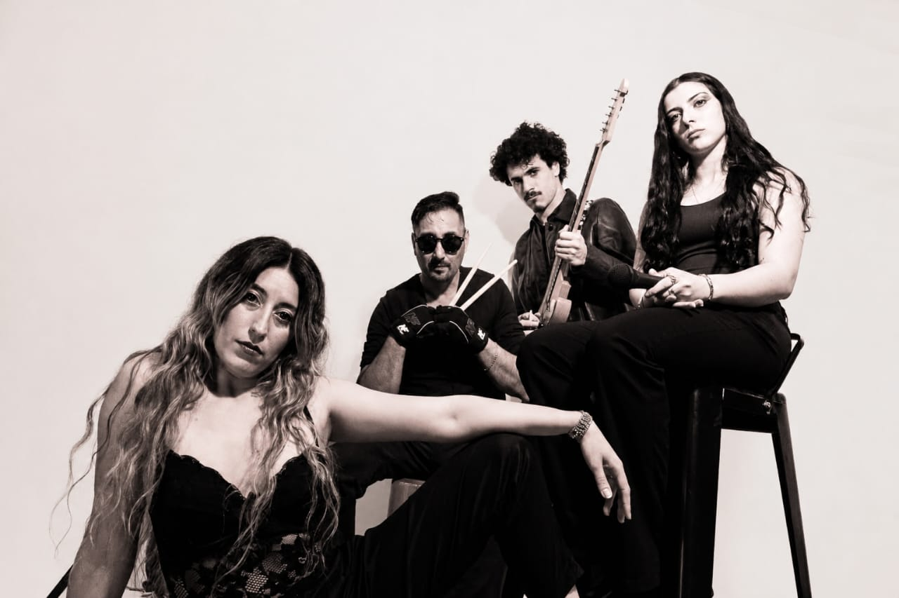
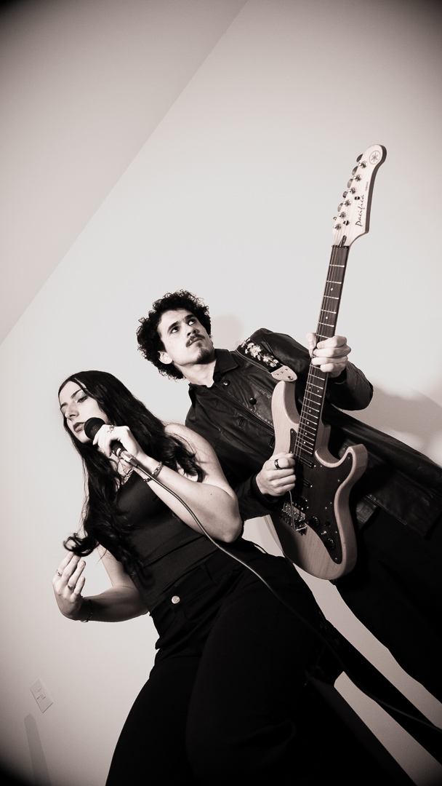
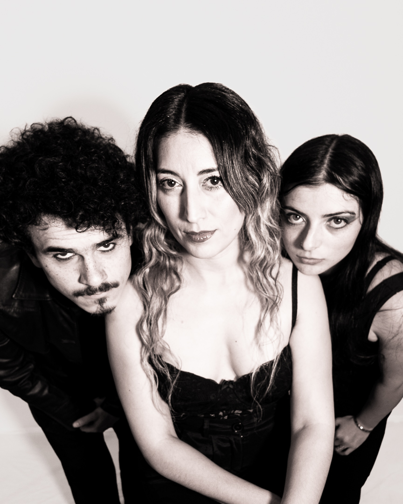
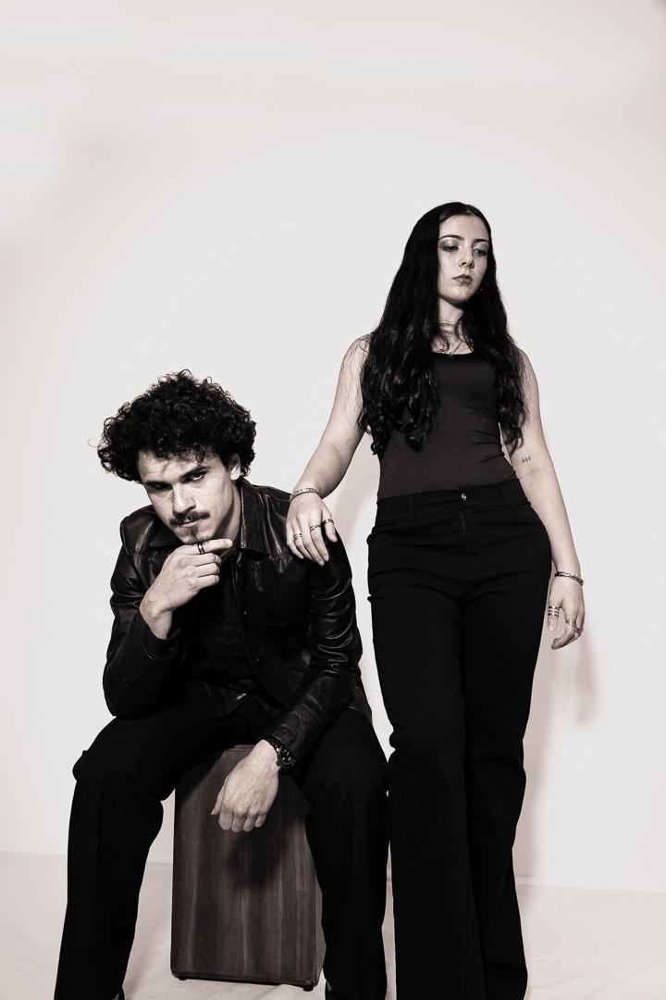

Banda en vivo de La Plata. De los ’70 a hoy, música nacional e internacional, adaptada a cada evento.

Somos músicos que van de un género a otro sin perder la energía. Elegimos los clásicos que todos cantan y los tocamos para que sigan vivos.
Crecer como profesionales en el ámbito musical.
Conectar con el público presente, adaptándonos a cada evento.
Que la música siga propagándose: mantener viva la cultura musical en las viejas y nuevas generaciones.
Voces, guitarras, teclados y batería. Una formación que cambia de género sin perder la energía.



Una muestra de lo que suena: clásicos de los ’70 a hoy, internacionales y nacionales. El setlist final se arma según tu evento.
Armamos la formación según el evento, social o empresarial. Cuando el repertorio lo pide, sumamos músicos sesionistas, por ejemplo vientos.
PARA ORGANIZADORES
| CANAL | INTEGRANTE | USO | TIPO | PIE | OBSERVACIONES |
|---|---|---|---|---|---|
| 01 | Martina Ferreyra | Vocalista | Beta 58 | Pie de jirafa alto | |
| 02 | Eliana Sortino | Vocalista | Beta 58 | Pie de jirafa alto | |
| 03 | Santino Radi | Teclado | DI | N/A | Cable provisto por el músico |
| 04 | Mariano Artola | Coros | Shure SM58 | Pie de jirafa alto | |
| 05 | Mariano Artola | Guitarra eléctrica | DI · entrada XLR | ||
| 06 | Bautista Pourtalé | Guitarra eléctrica | Shure SM57 | N/A | |
| 07 | Rodrigo Suárez | Bajo eléctrico | DI | N/A | Cable plug ¼" provisto por el músico |
| 08 | Diego Sánchez | Batería electrónica (L) | DI | N/A | Se necesita 220 V |
| 09 | Diego Sánchez | Batería electrónica (R) | DI | N/A | Se necesita 220 V |
| 10 | Laura Lencina | Piano | DI | N/A |
| CANAL | INTEGRANTE | USO | MONITOREO |
|---|---|---|---|
| 01 | Martina Ferreyra | Vocalista | Piso |
| 02 | Eliana Sortino | Vocalista | Piso |
| 03 | Santino Radi | Teclado | Piso |
| 04 | Mariano Artola | Coros | Piso |
| 05 | Mariano Artola | Guitarra eléctrica | Piso |
| 06 | Bautista Pourtalé | Guitarra eléctrica | Piso |
| 07 | Rodrigo Suárez | Bajo eléctrico | Piso |
| 08 | Diego Sánchez | Batería electrónica (L) | In-ear personal o piso plano |
| 09 | Diego Sánchez | Batería electrónica (R) | In-ear personal o piso plano |
| 10 | Laura Lencina | Piano eléctrico | Piso |
| 11 | Escenario | Sidefill |